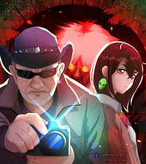
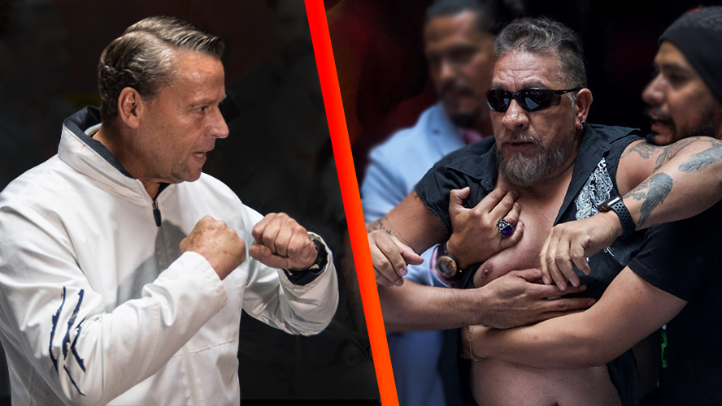
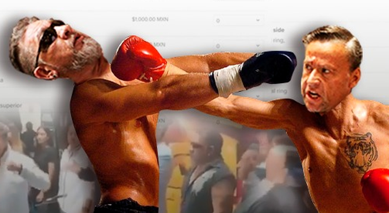

Seran superman vs goku bruce, lee vs mohammed ali ,peleas legendarias que solo existen en la imaginacion  del respetable para determinar de una vez por todas quien seria el mas fuerte si se enfrentaran estos personajes mitológicos lo mas parecido a lo que tuvieron estas comparaciones fue la gran contienda entre dos de los mas grandes artistas marciales del mundo le ha dado a Adame quinto dan cinturón aislante negro contra Carlos El hombre de más de 1000 espíritus exorcizados Trejo estas, dos instituciones de las artes marciales mixtas. El Mitote y La Menita Rica estuvieron a segundos de firmar un combate histórico que al final debido a una botella voladora embrujada la fecha. El conflicto entre Alfredo Adame y Carlos Trejo ha sido uno de los enfrentamientos más mediáticos en la farándula mexicana. La rivalidad comenzó hace años, principalmente por diferencias personales y profesionales, escalando a fuertes intercambios de palabras en medios de comunicación y redes sociales. Adame, actor y conductor, y Trejo, escritor y cazafantasmas, han protagonizado varios altercados públicos, incluyendo desafíos a peleas físicas que generaron gran controversia y atención mediática. A pesar de varios intentos de reconciliación y múltiples declaraciones, el conflicto ha persistido, manteniéndose como un tema recurrente en el entretenimiento mexicano. Este 5 de abril de 2022, durante una conferencia de prensa en la que Adame presentaba sus nuevos proyectos, el ambiente se volvió tenso cuando el abogado del autor de Cañitas irrumpió en el lugar reclamando la ausencia del actor en la pelea pactada entre ambos. La situación escaló rápidamente cuando las palabras se convirtieron en golpes. El ahora participante de La Casa de los Famosos, visiblemente enfurecido, se abalanzó sobre el representante legal del investigador de lo paranormal, desatando un caos en la sala. Sin embargo, la violencia no tardó en cobrar su precio, ya que el actor terminó en el suelo en dos ocasiones durante el altercado. La tensión entre ambos personajes salió a la luz durante una entrevista concedida por el también actor, en la que remontó el inicio de su conflicto con el llamado caza fantasmas a casi dos décadas atrás. Adame narró cómo Trejo, a quien inicialmente describió de manera despectiva, llegó al programa “Hoy” hace 19 años con su libro titulado "Cañitas". Según el presentador, fue él quien ayudó al autor del Best Seller a ganar fama y, por ende, dinero. Alfredo Adame también compartió detalles sobre suproyecto “La Mesa de Adame” en Canal 4, el cual gozó de popularidad gracias a la cobertura de temas variados, incluyendo fenómenos paranormales. Según sus palabras, esto generó el enfado de Carlos, quien se considera a sí mismo como una autoridad en la investigación de lo paranormal. Además, acusó al ‘Cazafantasmas de México’ de iniciar una campaña de desprestigio en su contra, alegando que tenía información de un testigo sobre el bajo rendimiento de su programa. Frente a esta situación, Adame advirtió que su respuesta a Trejo sería contundente, diferenciándose así de otras personalidades como Jaime Maussan, implicado de forma indirecta en el relato por haber, supuestamente, llevado a Trejo a prisión.